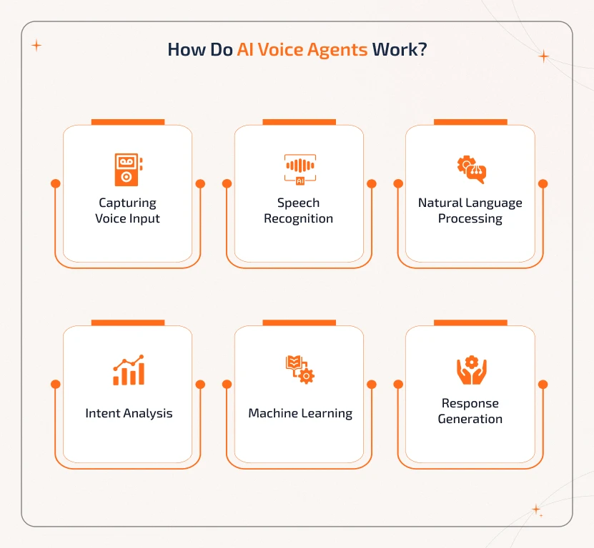
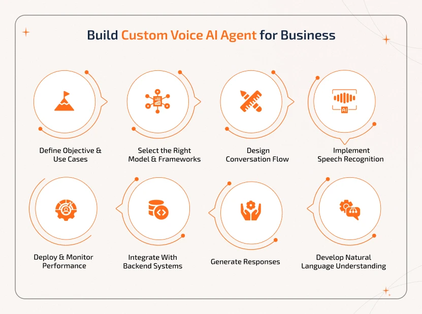
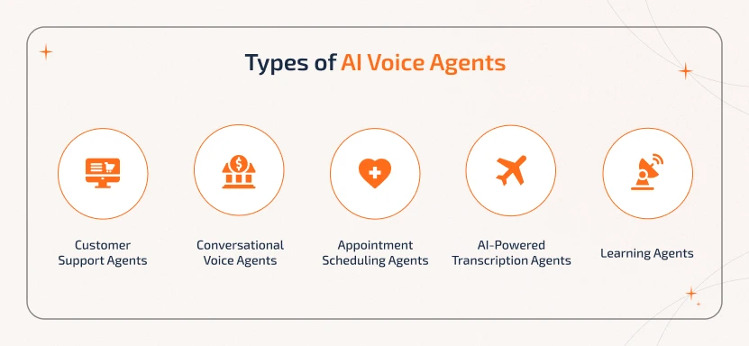
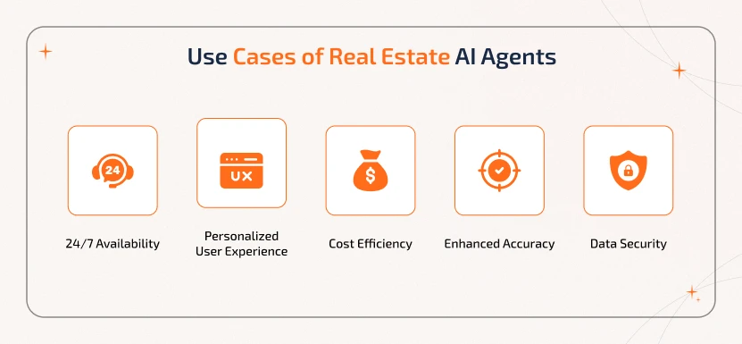
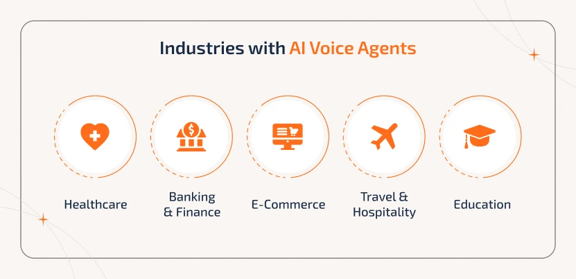

In today’s modern landscape, voice is the more natural and intuitive way for humankind to interact and engage with current technologies. In accordance with that, AI voice agents are transforming how a business and an individual should communicate. It involves delivering virtual assistants to manage generic tasks and customer support agents to resolve user queries quickly. Building an AI voice agent is not just about creating just a voice bot. Instead, it's about developing a system that understand user's needs and do responds with a human touch.
To build an AI voice agent in late 2026, you must need an expert group who excels in handling cutting-edge technologies. With the respective tools, frameworks, and team, business can build a full scale AI voice agent that can handle hard tasks and can integrate seamlessly with multiple platforms, including mobile, web, and desktop.
In this guide, we will explain how to build an AI voice agent for real business applications along with customer operations in detail.
What is an AI Voice Agent?
An AI voice agent is an engaging software system which is designed specifically to easily recognize and respond to human speech. This allows users to communicate with modern techs through simple and natural voice commands. Compared to the usual chatbot, An AI voice agent will take advantage of speech recognition and natural understanding to engage in real-world conversations.
These voice assistant agents can respond to questions, perform complicated tasks, and provide personalized recommendations, which makes the interactions with users even faster.Popular examples of a voice assistant agent include Amazon Alexa, Siri, Google Assistant, and Bixby. All of them are used across industries in the customer service section, which handles users’ queries without human intervention.
How Do AI Voice Agents Work?
To make the AI agent work flawlessly, developers must blend speech recognition, NLP, and ML to understand and respond to regular human speech. These AI systems will continuously learn from the interactions and evolve accordingly.
Businesses often ask, how do AI voice agents work? The workflow involves six major steps.

1. Capturing Voice Input
The process starts when the user triggers the AI voice agent and starts to speak into a microphone. During this, the system records and digitilize the sound waves for further processing. This action involves clear audio input to avoid misinterpreted pronunciation.
2. Speech Recognition
The recorded audio is further converted into text by leveraging the speech-to-text algorithms. Using speech recognition, the system identifies words, accents, and tones to deliver precise transcription. Moreover, with advanced technologies, the process is possible across multiple languages.
3. Natural Language Processing
With the help of Natural Language Processing for voice agents, the system can understand the meaning behind the converted text. Using this, the agent breaks down the sentence structure, extracts user intent, adds user-friendly words, and clarifies context. This enables the AI agent to provide human-like responses.
4. Intent Analysis
As a next step, the AI agent allocates the user’s input to certain actions or queries. This determines whether to respond to the question, conclude a task, or fetch the data, ensuring relevant and goal-driven responses from the AI voice agent’s side.
5. Machine Learning
With Machine Learning functionalities, the AI models will continuously learn from past interactions and real-time feedback. Over time, these AI voice agents evolve and do improve personalization and accuracy. As a result, it makes the robotic conversation faster, smarter, and language-friendly.
6. Response Generation
Finally, the system generates a standard response and delivers it via TTS. The output that has been delivered is conversational and in natural language, making the interaction feel close to humankind.
How to Build a Custom Voice AI Agent for Business
Building a custom AI voice assistant for business needs involves advanced speech recognition, human language understanding, and personalized response systems. With a structured approach, businesses can design an AI voice agent that aligns with the project's needs. Getting to know how to build an AI voice agent involves aligning goals and system capabilities. AI voice agent development becomes successful with clear objectives and scalable architecture. Here’s the AI voice agent architecture.

Step 1: Define Objective & Use Cases
Before building the custom AI voice agent, make sure to outline what task the system should perform. Locate the target audience, industry needs, and possible outcomes.
Step 2: Select the Right Model & Frameworks
Choose the right development platform and the respective frameworks to build the AI voice agent. Utilizing tools like Dialogflow, Azure, and Amazon Lex simplifies the integration and minimizes the development complexity.
Step 3: Design Conversation Flow
Plan and strategize how the conversation should progress, including generic queries and user responses. Focus on crafting an intuitive, user-friendly, and natural path, ensuring enhanced user experience and minimizing communication errors.
Step 4: Implement Speech Recognition
Ensure to integrate ASR (Automatic Speech Recognition) technology to transform spoken words into regular text. To generate a literal output with relevant responses, accurate recognition is vital. So, test thoroughly to handle different accents, tones, and approaches.
Step 5: Develop Natural Language Understanding
NLU, a subfield of AI and NLP, comprehend the true meaning behind the user queries to generate relevant answers. Alongside NLU, train the model using contextual data, entities, and intents to ensure the AI voice agent handles complex interactions.
Step 6: Generate Responses
Craft responses that show your brand voice and desired persona. Make sure to include clarification prompts and a fallback for inputs that are being misunderstood. A consistent personality gains interaction and trust among users.
Step 7: Integrate With Backend Systems
Ensure to link the AI voice agents to APIs, CRM systems, and databases for instant feedback. This integration allows to carry out tasks, including fetching data, booking appointments, and more.
Step 8: Deploy & Monitor Performance
Finally, deploy the AI voice agent across platforms (Amazon Alexa, Apple HomePod, Bixby). After deploying, monitor the agent performance, user interactions, and gather feedback to refine the functionality.
Essential Tools & Frameworks to Build AI Voice Agents
To build a fully functional AI voice agent for business, developers must use advanced tools and frameworks. Choosing the right stack not only speeds up AI voice agent development but also improves accuracy. Implementing these technologies will enhance the user experience without compromising the quality.
1. TTS (Text-to-Speech) Engines
Text-to-speech engines will convert the text input to natural language, which ensures the voice agent sounds human-like and natural.
- Google Cloud TTS
- Amazon Polly
- Microsoft Azure TTS
2. Speech Recognition Tools
The STT (Speech-to-Text) tools allow AI voice agents to understand the user input precisely and engage in real-time voice interaction.
- Google Cloud SST
- IBM Watson STT
- DeepSpeech
3. NLP Frameworks
Natural Language Processing for voice agents understand the intent, context, and sentiment, which makes the conversation more natural and engaging.
- Hugging Face Transformers
- Rasa
- Dialogflow
4. Voice Modulation & Response APIs
The voice modulation tools add personality, emotion, and tone to the AI voice agent, which helps in improving user engagement.
- Affectiva
- Resemble AI
- BeyondWords
5. Testing Tools & Analytics
The testing tools and analytics platforms help users detect and minimize potential errors. This approach drastically improves the user experience.
- Botium
- Voiceflow
- Google Analytics
Types of AI Voice Agents
Basically, AI agents are in different forms, each is tailored to specific industry and project needs. Starting from customer support for handling inquiries to scheduling and transportation, these agents streamline the workflow via natural interactions.

Customer Support Agents
The customer support AI voice agents are made specifically for handling customer inquiries in real time. They can solve users’ issues without any long wait. In recent days, many businesses have been leveraging these agents to minimize cost and boost customer satisfaction.
Conversational Voice Agents
A Conversational AI voice agent is designed to mimic natural human dialogue, which goes beyond the scripted responses. Implementing them in AI chatbots will make the customers engaged and make the interactions more authentic. These agents are mostly used in virtual assistants, retail, and entertainment apps.
Appointment Scheduling Agents
Developers can integrate appointment-scheduling AI voice agents with Microsoft Outlook or Google Calendar to streamline the booking process. It helps users manage calendars by reminding and updating them about appointments. In the meantime, high-scale industries like healthcare, service, and consulting leverage them to minimize scheduling errors.
AI-Powered Transcription Agents
The transcription agents play a vital role in converting generic speech to accurate text. These are widely used in interviews, conferences, lectures, and legal proceedings. Besides performing transcription, they can summarize key points and even work well in multilingual environments.
Learning Agents
Out of all types, learning agents will consistently evolve through analyzing the user interactions and real-time feedback. These agents will adapt to individual preferences and make progress with changing business needs. Over time, the AI learning agents will become smarter and do offer more accurate voice interactions.
Potential Benefits of AI Voice Agents in the Evolving Business Landscape
More than just delivering convenience, these agents are redefining how businesses interact with customers. By fusing reliability, automation, and personalization altogether, businesses can get a smoother and faster user experience.

24/7 Availability
Unlike human agents, AI voice agents don’t need any break during work. They can work 24/7 consistently, which allows businesses to respond to the global audience across different regions.
Personalized User Experience
AI voice agents will learn from past interactions and inputs and give responses in natural language. From remembering a customer’s preference to anticipating their needs, it offers a personalized experience to improve satisfaction.
Cost Efficiency
AI agents can automate repetitive calls and routine queries, which can save significant manual staffing costs. They can also scale operations without requiring additional resources, resulting in higher efficiency.
Enhanced Accuracy
Unlike humans, who can make potential errors, AI voice agents will maintain consistency in each and every response. With continuous learning, they can minimize scheduling errors, data entry issues, and mistakes in transcription.
Data Security
Most of the industries with AI voice agent systems will follow security standards, including GDPR, HIPAA, and PCI DSS, to avoid potential risks. The inputs given by the user and the generated output are maintained securely without any potential exposures.
Transforming Industries with AI Voice Agents
In this digital world, AI voice agents are reshaping industries by bridging the communication gap between humans and modern tools to improve efficiency. Many times, businesses often question how are voice agents used in virtual assistants. The answer to this varies across sectors like healthcare, retail, finance, and travel. Here are five real-world AI voice agent use cases across different sectors.

Healthcare
AI voice agents in the healthcare sector can handle multiple tasks, including appointment scheduling, address medication reminders, and give post-treatment support. These agents can also able to respond to general patient queries, which reduces staff workloads and enhances patient satisfaction.
Banking & Finance
By leveraging these AI agents, the banking and finance sectors can guide their valuable customers through transactions, checking their bank balance, and reporting lost cards. In the meantime, security systems are enhanced by using voice biometrics for authentication and minimize wait times.
E-Commerce
Newly launched online stores can deploy AI voice agents to help customers in tracking shipments, placing orders, and giving personalized product recommendations. This methodology will boost sales by offering continuous voice-enabled customer support without human involvement.
Travel & Hospitality
Hotels, airlines, and travel agencies can leverage smart AI voice agents to help tourists book flights, check in, and give local travel recommendations. With multi language support, AI voice agents can assist tourists worldwide, providing a convenient travel experience.
Education
In the education sector, AI voice agents act as a visual tutor. It answers student queries and offers personalized learning recommendations for smart exam preparations. The agents can also assist with administrative work, including enrollment and schedule reminders, and interactive sessions.
Common Pitfalls and Solutions While Building AI Voice Agents
Building an AI agent can be exciting, but it does come with several challenges that affect the user experience. During AI voice agent development, teams often face issues in speech clarity, accents, and latency. Understanding the pitfalls and addressing them early ensures a natural and trustworthy AI voice agent.
Monotonous & Robotic Voice
- Challenge: A few AI voice agents will sound flat, robotic, and unnatural, making users disengage very often.
- Remedy: Leverage advanced TTS models, which include emotional variation, intonation, and sound patterns and test with various voice tones to pick the one that resonates with the target audience.
Slow Responses
- Challenge: Delivering long, expansive, and delayed responses can frustrate users and lead to end the conversational flow
- Remedy: Ensure to keep the responses structured and concise. Optimize backend processing for real-world responses and do prioritize clarity over integrality.
Ignoring Accent Variations
- Challenge: While implementing, a few voice agents fail to recognize non-standard accents or understand multiple languages, which leads to reduced accessibility.
- Remedy: Make sure to integrate multilingual NLPs and accent-aware models, offering voice options to adapt to regional pronunciation.
Privacy & Ethical Concerns
- Challenge: At times, collecting voice data without any proper privacy measures can break user trust and violate legal regulations.
- Remedy: Ensure the data is anonymized, stored securely, and follows key data protection practices to mirror loyalty and gain trust among users.
Voice User Interface (VUI) Design - Best Practices
Designing a Voice User Interface (VUI) is vital to deliver smooth, human-like communication between the user and the system. A properly planned and structured VUI allows voice assistant agents to respond accurately while guiding the user through the right conversational path.
- Ensure to keep the conversations simple and natural. So, the users don't have to speak like a robot.
- Whenever the agent couldn't understand something, it should ask again politely and help the user continue without any frustration.
- Ensure to provide responses in a friendly tone that represents your brand. Thus, users will feel more connected, and this helps build trust.
- Allow the users to ask follow-up questions without repeating themselves. The agent becomes smarter over time witha good memory.
- It is vital to design the VUI in such a way it understands the accents, speech speeds, and noisy environments. Hence, every user will be able to use it.
- Allow users to interrupt when needed just like a real conversation. This makes interactions feel more natural and human-like.
The above VUI best practices helps businesses deliver better conversations and make AI voice agent development brings in business results.
Security & Compliance in Voice AI Systems
Enterprises integrating voice AI into their digital ecosystem will prioritize security. As AI voice agent development often includes sensitive user data, using strong protection and compliance measure helps avoid privacy risks. Hence the following security measures is essential:
- Adding data encryption will help precent prevent data leaks.
- Including an additional security layer such as voice biometrics and authentication reduces unauthorized access.
- Ensuring the voice assistant agents are in compliance with global regulations like GDPR, HIPAA, PCI DSS, etc.
- Using role-based access control limits staff access to critical data and ensures strong verification.
- Regularly auditing and monitoring helps find suspicious patterns and provides quick security upgrades.
Future-Proofing AI Voice Agent for Better Tomorrow
After analysing all the aspects, we conclude that building an AI voice agent is all about blending the latest technologies and innovations to make human-like communication. Unlike generic speech recognition, AI voice agents are built to deliver engaging and natural conversations. By selecting the possible tools, avoiding potential pitfalls, and continuously training the model, we can set the foundation for meaningful conversations.
Future-proofing AI voice agents includes agile methodologies like embracing multilingual capabilities and implementing ethical AI practices. So, when you think about building AI voice agents, do remember it’s a journey of constant improvement, where AI agent and human agent must work together.